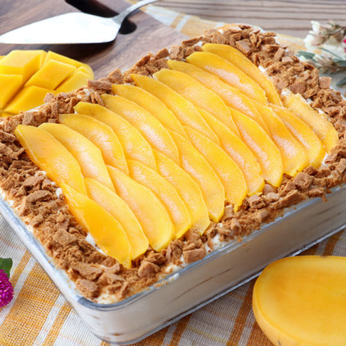

Mango Float

Mango float is a popular dessert in the Philippines. It also goes by the names: Mango Royale or Crema de Mangga.
A Filipino icebox cake made of graham crackers, all-purpose or whipped cream, sweetened condensed milk, and ripe mangoes. It is chilled for a few hours before serving,
though it can also be frozen to give it an ice cream-like consistency. It could be the easiest, delicious no-bake dessert you could ever make
Ingredients
- 24-30 pieces of graham crackers
- 3 packs of 500ml all purpose cream
- 3 cans of 300ml sweetened condensed milk
- 3 small medium ripe mangoes
Instructions
- 1. Chill the all-purpose cream the fridge overnight or in the freezer for 30 minutes.
- 2. Peel the skin off the mangoes. Cut away the sides (flesh) from the pit. Lay the mango halves flat-side down on a cutting board. Cut the flesh lengthwise into thin slices. Set aside.
- 3. Transfer chilled all-purpose cream in a large bowl. If you like it lighter and fluffier, whip it with a hand mixer until it doubles in volume.
- 4. Gradually add the sweetened condensed milk to the all-purpose cream until well blended
- 5. Line the bottom of a rectangular or square (8x8 or 6x6) glass dish (or something similar) with a layer Graham crackers then pour and spread 1/4 of the cream mixture on top of the crackers and then top with mango slices.
- 6. Repeat this process until 4 layers are formed, ending with the cream and mango slices on top. You can arrange the mango slices for the top in an overlapping manner for design.
- 7. Chill for at least 3-5 hours to set completely. You know it is ready when the Graham becomes soft and fluffy and no longer dry. You can also freeze it at this point before serving.